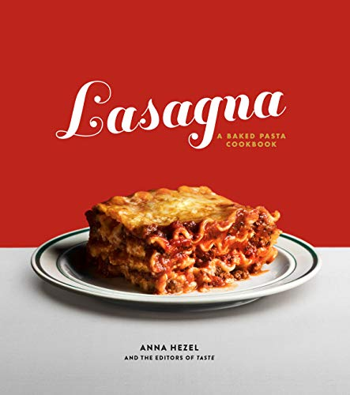

Home made Lasagna

Description:
This is a homemade lasagna recipe with a meaty,
made from scratch tomato sauce and a deliceously
cheesy filling.
Ingedients:
- meat
- onion
- canned tomatoes
- fresh herbs
- spices and seasinings
- noodles
- cheese
- eggs
Steps:
- coock the meat
- cook the noodles
- make the cheese layer
- assemble the lasagna
- bake the lasagna
Odin Recipes